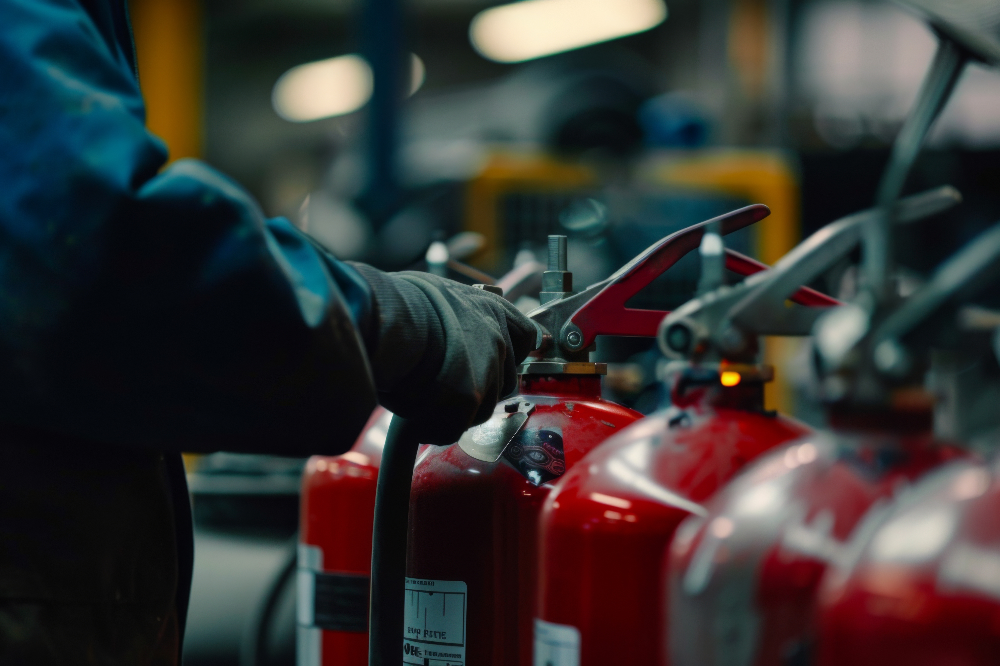

C-fire produitt des équipements et systèmes innovants et écologiques de lutte contre l’incendie. Notre point de départ : même dans le monde de la lutte contre l’incendie, nous pouvons apporter notre contribution à la lutte contre le réchauffement climatique. C’est pourquoi nous avons développé des produits à la fois de haute qualité et conçus pour minimiser l’impact sur les personnes, l’environnement et les animaux.
Tous nos produits répondent aux normes belges et européennes les plus strictes et sont, si souhaité, entièrement personnalisables. C-fire assure également… l’installation, l’entretien annuel et l’inspection de tous les extincteurs et dévidoirs muraux conformément aux normes belges.
C-fire fait partie du groupe belge Cordeel Group.

Chez C-fire, nous combinons innovation, durabilité et expertise pour offrir des solutions fiables de lutte contre l’incendie. Nos produits et services aident les entreprises et organisations à travailler en toute sécurité, en conformité et de manière respectueuse de l’environnement.
C-fire développe des produits de lutte incendie sûrs pour l’homme et l’environnement. Nos produits BIOLINE et additifs sont sans PFAS et biodégradables.
Grâce à de nombreuses années d’expérience, nous proposons des solutions adaptées à chaque situation, des bureaux aux installations industrielles.
Notre gamme comprend des extincteurs, détecteurs, signalisation et additifs certifiés, conformes aux normes en vigueur.
C-fire assure la maintenance professionnelle et le contrôle des installations de sécurité incendie, afin que votre organisation reste sûre et conforme.

Tous les incendies ne nécessitent pas la même solution. En fonction de l’environnement et du niveau de risque, il est important de choisir un extincteur adapté à votre situation. Nous vous guidons avec plaisir.
Pour les petits incendies naissants à la maison, en caravane, en voiture ou en déplacement, une solution compacte est idéale.
Recommandé : Control Fire
Control Fire →Dans les bureaux, commerces et espaces publics, une solution simple d’utilisation et propre est essentielle.
Recommandé : extincteurs à mousse
Extincteurs à mousse →Dans les environnements industriels ou les ateliers, les risques sont souvent plus élevés. Une solution puissante et polyvalente est nécessaire.
Recommandé : extincteurs à poudre
Extincteurs à poudre →En cas d’incendie dans des armoires électriques, salles serveurs ou appareils électriques, il faut un extincteur qui ne cause pas de dommages supplémentaires.
Recommandé : extincteurs CO₂
Extincteurs CO₂ →